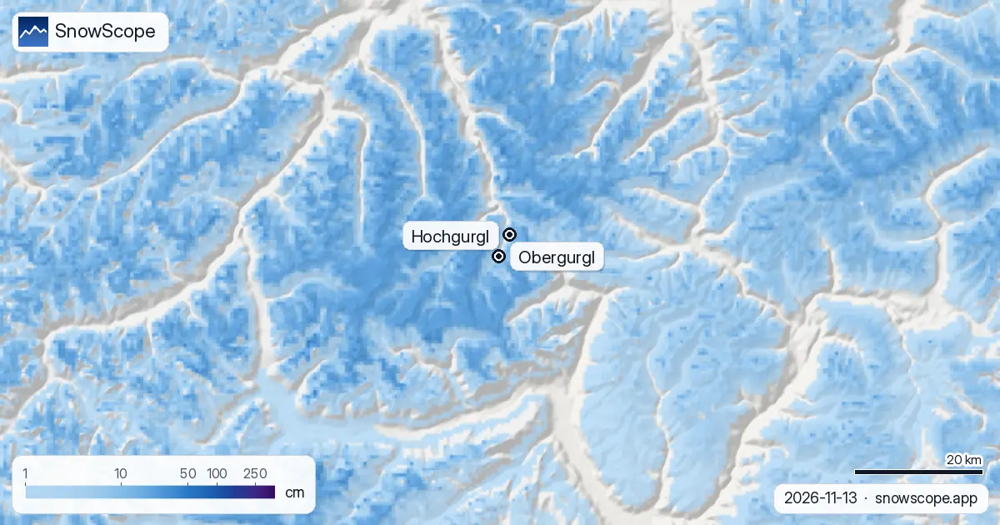

Bollettino neve Obergurgl: 20 cm in vetta, neve fino al paese questa settimana (13 novembre 2026)
Obergurgl si trova in fondo all'Ötztal, uno dei paesi più alti d'Austria, e a novembre questa quota è tutta la sua storia. Il bollettino neve di oggi dalla nostra mappa: circa 20 cm in vetta (3024 m), circa 5 cm a metà montagna (2404 m) e terreno scoperto agli impianti più bassi (1784 m). La parte interessante è la settimana: 21 cm in basso, 27 cm a metà e 34 cm in alto, con la quota neve appena sotto il paese.
Le previsioni neve in tempo reale per Obergurgl nell'app SnowScopeAltezza neve, allerte powder e mappa 3D, gratis.
Dagli impianti bassi verso l'alto
A 1784 m il terreno è ancora scoperto. Negli ultimi sette giorni sono caduti solo 6 cm, e non sono rimasti. A metà montagna cambia tutto: 16 cm nella settimana, 8 cm dei quali nelle ultime 24 ore, oggi assestati a circa 5 cm al suolo.
La vetta ha per ora il manto migliore della valle: 20 cm al suolo dopo 20 cm di neve fresca in sette giorni, 10 cm dei quali da ieri. Uno strato sottile di inizio stagione, ma bianco.
Previsioni neve a Obergurgl questa settimana
Nei prossimi sette giorni vediamo 34 cm in vetta, 27 cm a metà montagna e 21 cm agli impianti bassi, circa 4 cm in alto nelle prime 24 ore e il resto dopo. Due cose da sapere prima di fidarsi.
Primo, la quota neve. Altre previsioni la mettono intorno ai 1700 m, poco sotto il paese: quasi tutto ciò che cade a Obergurgl dovrebbe essere neve, a tratti con pioggia o neve bagnata. Secondo, la quantità. Le altre previsioni che controlliamo sono più basse, da 8 a 24 cm in vetta. I nostri 34 cm sono il limite alto: pianificate con circa 20 cm e considerate il resto un regalo.

Perché il paese alto è la scommessa più sicura
Nei nostri 46 inverni passati (1980-81 - 2025-26), un novembre normale ha 12 cm agli impianti più bassi di Obergurgl, 31 cm a metà montagna e 62 cm in vetta. Più giù nella valle, agli impianti bassi di Sölden (1346 m), lo stesso mese ha di solito 7 cm, e un inverno mediano raggiunge lì 48 cm di massimo contro 64 cm qui. In circa metà degli inverni, 6 settimane portano 50 cm o più anche in fondo a Obergurgl, cosa che un paese più basso vede di rado.
Cosa costruisce di solito la stagione
Dicembre porta di solito il manto a 27, 64 e 125 cm dal basso verso l'alto. A metà montagna 18 settimane dell'inverno hanno 50 cm o più in 9 inverni su 10, in vetta 25 settimane. Un inverno mediano arriva a 64 cm in basso, 162 cm a metà e 328 cm in alto.
Il calo è piccolo in basso, 68 cm nei primi 15 dei nostri inverni contro 64 cm negli ultimi 15, e più forte in alto, da 341 a 303 cm. L'inverno scorso è stato povero, con massimi di 47, 110 e 212 cm. L'area mappata, Obergurgl e Hochgurgl insieme, conta 64 km di piste e 25 impianti.
Consigli per sciatori
- Programmate la settimana con circa 20 cm di neve fresca in vetta, non 34 cm: le previsioni non concordano sulla quantità.
- In fondo all'Ötztal la neve sulla strada è probabile: portate le catene e controllate la strada prima di risalire la valle.
- Un manto sottile di inizio stagione nasconde sassi: restate sulle piste aperte e battute, e leggete il bollettino valanghe del Tirolo prima di qualsiasi fuoripista.
Altre mappe (siti esterni)
Riferimenti e crediti
- Obergurgl-Hochgurgl, sito ufficiale (impianti, date di apertura, bollettino neve) www.obergurgl.com/
- Avalanche.report, bollettino valanghe Tirolo, Alto Adige e Trentino avalanche.report/
Su questi numeri
Numeri della neve: il modello neve di SnowScope, corsa del 12 novembre 2026 per il 13 novembre, a tre quote del comprensorio (una stima per l'area, non misure della località), e il nostro storico neve, 46 inverni passati (1980-81 - 2025-26), corretto per la quota. La forchetta e la quota neve confrontano altre previsioni meteo alle stesse quote. Lunghezza piste e numero di impianti: mappatura OpenSkiMap. Le previsioni cambiano: guardate la mappa prima di partire.
Bollettini valanghe ufficiali: Avalanche.report – Euregio Tyrol
Cita questo articolo
Per ricerca, didattica o stampa: numeri e grafici sono liberamente riutilizzabili con licenza CC BY 4.0 citando così.
SnowScope (2026), Bollettino neve Obergurgl: 20 cm in vetta, neve fino al paese questa settimana (13 novembre 2026), https://snowscope.app/blog/it/2026/11/obergurgl-snow-report-13-november-2026.html, consultato il 2026-11-13
SnowScope (Atlas Labs). (2026, November 13). Bollettino neve Obergurgl: 20 cm in vetta, neve fino al paese questa settimana (13 novembre 2026). SnowScope snow reports. https://snowscope.app/blog/it/2026/11/obergurgl-snow-report-13-november-2026.html
BibTeX
@misc{snowscope2026obergurglsnowreport13nov,
author = {{SnowScope (Atlas Labs)}},
title = {Bollettino neve Obergurgl: 20 cm in vetta, neve fino al paese questa settimana (13 novembre 2026)},
year = {2026},
month = nov,
howpublished = {\url{https://snowscope.app/blog/it/2026/11/obergurgl-snow-report-13-november-2026.html}},
note = {Published 2026-11-13 13:02 UTC; accessed 2026-11-13}
}· CC BY 4.0 · Metodi, dati e strumenti →
Obergurgl: neve e temperatura per quota, quest'inverno vs lo scorso (strumenti) →
Segui Obergurgl
Gratis: un messaggio quando arriva la neve e il meteo ogni mattina.
Altri bollettini neve

In 24 inverni su 46 le località del versante italiano e delle Alpi meridionali francesi hanno avuto un inverno relativamente più ricco del versante nord. Il grafico, le grandi annate e il tempo che le ha prodotte.

Il manto nevoso dagli Écrins alle Alpi Marittime e al Piemonte si riempirà come al solito a dicembre 2026? La previsione stagionale europea e la nostra mappa, montagna per montagna.

La neve di oggi a Livigno, cosa dice la previsione stagionale europea per dicembre e perché a Natale la quota vince su un mese caldo.